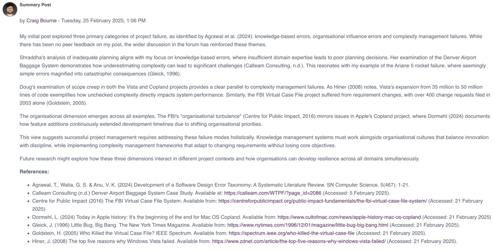

Unit 4: Estimating Tools and Risk Assessment
In unit 4 we discussed common risks and risk mitigation in large software projects. In addition, we began to utilise some of the tools discussed in the previous unit to create a project estimate.
Required Reading
- Abdel-Aty, M. et al. (2022) 'Investigating the Effects of Pedestrian-to-Vehicle Human–Machine Interface Design Using Driving Simulator Experiment', Transportation Research Record, 2676(11), pp. 30–43.
- Lu, Jin et al. (2021) 'Design of Human-Machine Interaction Interface for Autonomous Vehicles Based on Multidimensional Perceptual Context', Scientific Programming, 2021, pp. 1–8.
Unit Work
Collaborative Discussion - Summary post
The final week of the collaborative discussion required us to provide a summary of the discussion based on our initial posts and feedback from peers:
Read the full summary post here.
Wiki Entry
The second task of the unit was to read the article by Anton & Nucu (2020) and then answer the following questions:
- 1. What are the main risks that the authors identify? How do these fit into the traditional SDLC model?
- 2. Which of the frameworks discussed in the Unit 3 lecturecast would you use to capture and categorise the risks?
- 3. Add a risk and a suggested mitigation to the module wiki.
- 4. Choose an entry made by one of your colleagues in the wiki and comment on how you might mitigate it.
My response can be viewed here.
Estimating Tools and Risk Assessment
The final tasks of the unit were on estimating tools and risk assessment.
The first task was to review the NIST privacy tools and complete a variety of tasks. My response can be viewed here.
The link to the GitHub repo for the Python part of the task can be found here.
The second task was to read articles by Verner et al. (2014), and Anton and Nucu (2020), and then answer the following questions:
- 1. What are the main risks that the authors identify?
- 2. Which of the frameworks discussed in Unit 3 would you use to capture and categorise the risks?
- 3. Add a risk and a suggested mitigation to the module forum.
The response to these questions can be viewed here.